Một plugin, đủ cả để học ngoại ngữ
Học flashcard, kiểm tra, học ngay trong sách đang đọc, hỏi AI bạn chọn, tải bộ thẻ nhiều ngôn ngữ. Tất cả trên máy đọc sách e-ink, chia thành 6 nhóm dưới đây.
Học & ôn tập
Ôn đúng lúc sắp quên, kiểm tra theo nhiều cách.
- Flashcard SM-2
- 7 kiểu kiểm tra
- Thẻ trên màn hình chờ
Học ngay khi đọc sách
Từ đang học được gạch chân trong mọi cuốn sách, chạm là hiện thẻ.
- Gạch chân từ đang họcMỚI
- Chạm từ hiện thẻMỚI
- Tra từ là tự lưu thẻMỚI
Trợ lý AI
Hỏi đáp, tạo bộ thẻ, điền thẻ, với AI bạn chọn.
- Gia sư AI ngay trên thẻ
- Chọn 7 loại AIMỚI
- Tạo bộ thẻ bằng AI
Bộ thẻ
Tải từ Store hoặc mang bộ thẻ của bạn vào.
- Store nhiều thứ tiếng
- Nhập Anki, CSVMỚI
- AI điền ô trống, dịch lạiMỚI
Tiến độ & cá nhân hoá
Thấy rõ mình đã học bao nhiêu, chỉnh theo ý bạn.
- Thống kê, chuỗi ngày học
- Giao diện 10 ngôn ngữ
- Cài đặt theo ý bạn
Miễn phí, ủng hộ tuỳ tâm
Mọi tính năng đều miễn phí, không quảng cáo.
- Không khoá tính năng
- VietQR trong nước
- PayPal quốc tế
Học & ôn tập
Ôn đúng lúc sắp quên, kiểm tra theo nhiều cách.
Chạm để lật. Nhớ theo SM-2.
Thẻ hiện đúng lúc bạn sắp quên. Thẻ khó gặp lại sớm, thẻ dễ giãn dần, nên mỗi ngày chỉ cần vài phút.
- 1Chạm vào thẻ để lậtKhông cần nút lật, từ khoá giữ nguyên chỗ ở cả hai mặt.
- あPhiên âm trên chữFurigana cho tiếng Nhật, pinyin cho tiếng Trung, nằm ngay trên chữ trong câu ví dụ.
- 2Nghĩa và 2 câu ví dụ có dịchKèm cách đọc, âm Hán Việt và loại từ.
- ✓Lại · Khó · Tốt · DễMỗi nút hiện sẵn ngày ôn lại. Chạm là chuyển sang thẻ tiếp theo.
- ☾Thẻ ôn trên màn hình chờKhi máy ngủ, màn hình chờ hiện một thẻ cần ôn. Nhìn qua là nhớ thêm một từ.
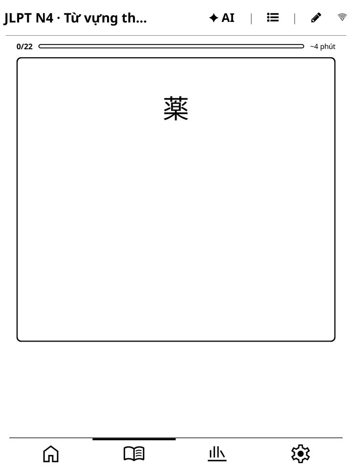
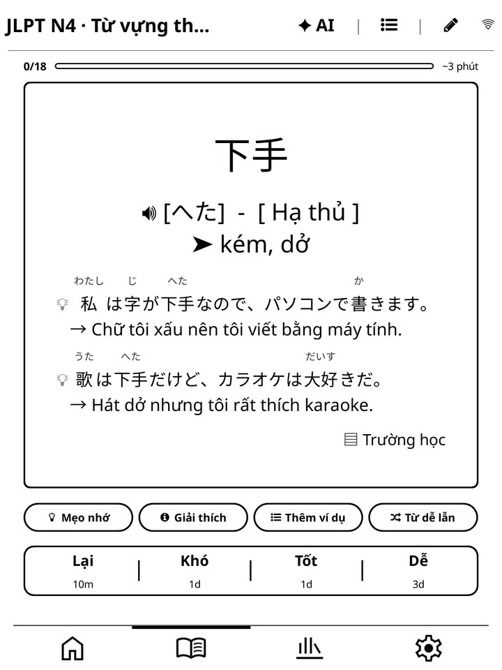
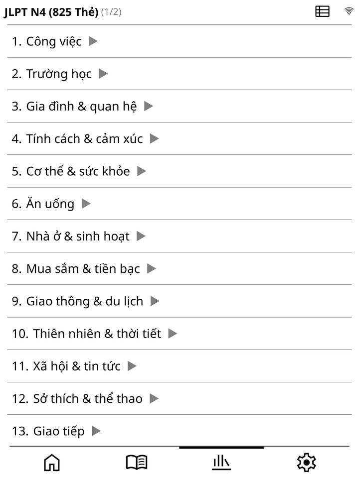
Mặt trước · Mặt sau · Danh sách thẻ
7 kiểu test, đổi cách hỏi để nhớ chắc
Mỗi kiểu test hỏi từ một góc khác nhau. Đúng hay sai đều được tính lại vào lịch ôn và điểm XP.
- ATrắc nghiệm, Đúng / SaiChọn từ đúng với nghĩa, hoặc đoán câu đúng sai.
- __Điền từ (Cloze)Điền từ còn thiếu vào câu ví dụ, học theo ngữ cảnh.
- ⇄Ghép cặpNối từ với nghĩa, chơi theo lượt.
- 読Cách đọc, Nghĩa → Từ, Gõ từLuyện đọc chữ và nhớ chủ động. Chọn 10 đến 50 câu mỗi lượt.
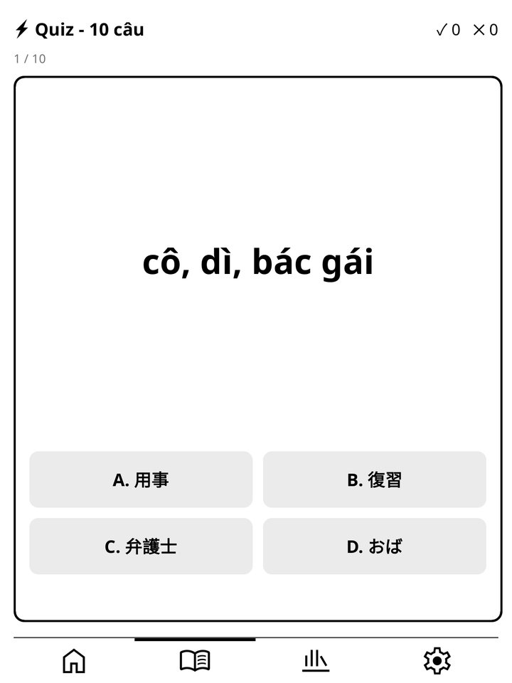
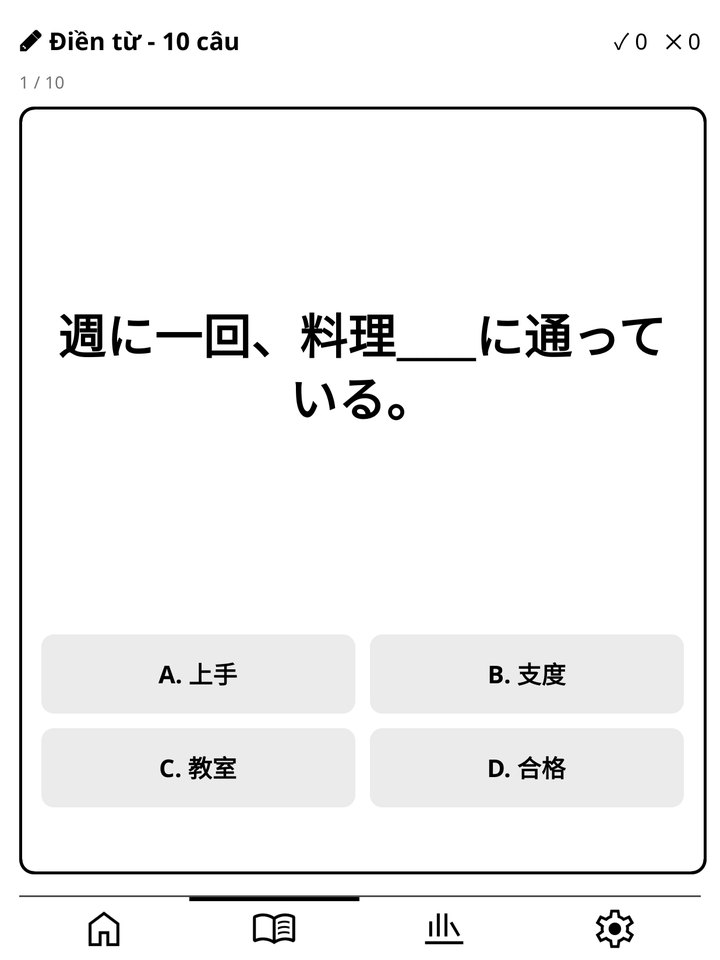
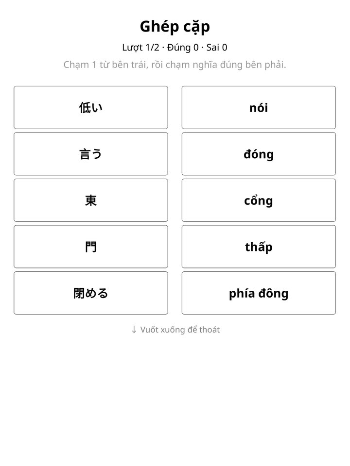
Trắc nghiệm · Điền từ · Ghép cặp
Học ngay khi đọc sách MỚI
Từ đang học được gạch chân trong mọi cuốn sách, chạm là hiện thẻ.
Từ bạn đang học tự hiện trong mọi cuốn sách
Mở bất kỳ cuốn sách nào trong KOReader, MemDeck gạch chân những từ bạn đang học. Gặp lại từ trong ngữ cảnh thật là cách nhớ lâu nhất.
- ＿Gạch chân theo mức nhớGạch liền: từ sắp quên hoặc vừa học lại. Gạch chấm: từ đang học. Từ đã nhớ chắc (trên 21 ngày) tự thôi gạch.
- ☝Chạm vào từ, hiện thẻ ngay trên trangNghĩa, phiên âm, loại từ, câu ví dụ và cả câu trong sách chứa từ đó. Nút ✓ Đã thuộc, Từ điển, Đóng.
- ↻Đọc sách cũng là ôn bàiĐọc qua trang mà không cần tra là MemDeck tính bạn còn nhớ từ đó. Phải mở từ điển thì thẻ được ôn lại sớm hơn.
- 文Mọi ngôn ngữTiếng Anh (nhận cả dạng -s, -ed, -ing), Nhật, Trung, Hàn, Thái, Pháp, Đức… trong sách EPUB, FB2, TXT, HTML.
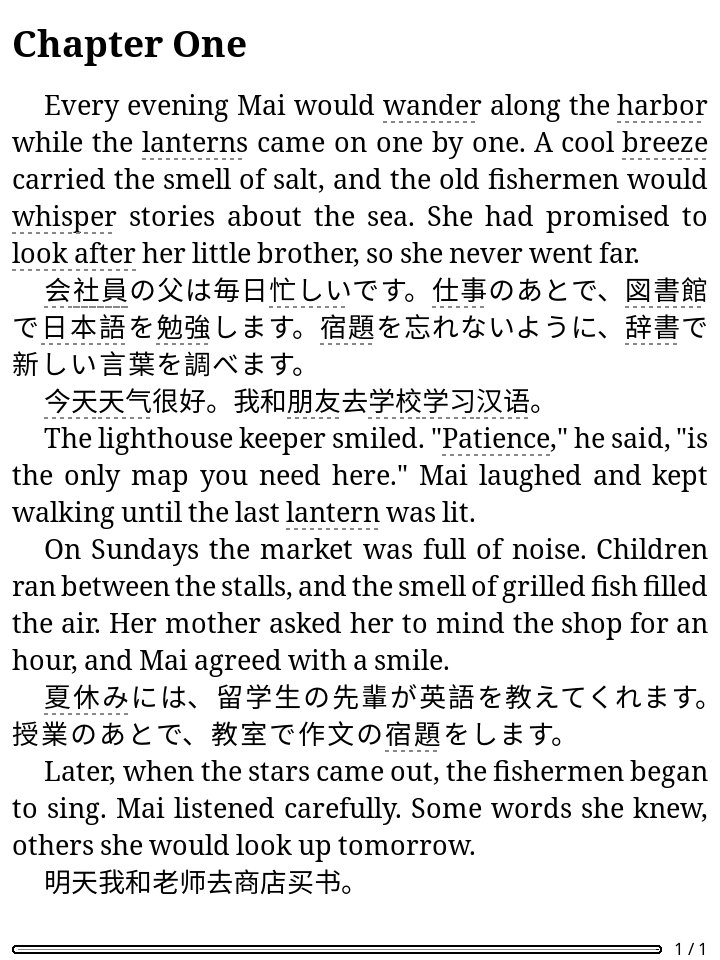
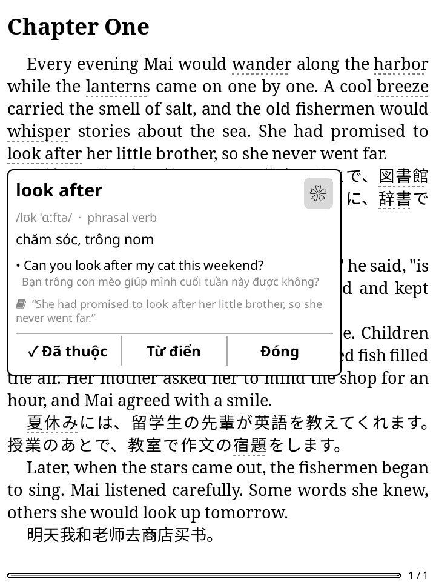
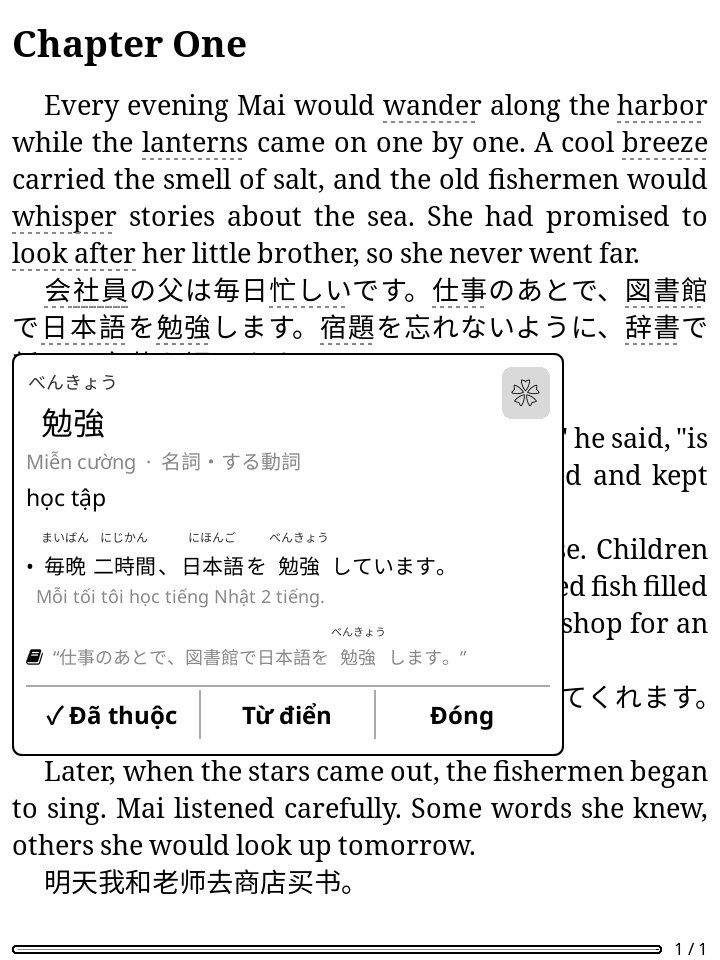
Trang sách · Chạm vào từ · Thẻ tiếng Nhật
Không cần gõ thẻ, cứ đọc là có bộ thẻ
Từ nào bạn phải tra nhiều lần, MemDeck tự lưu thành thẻ để ôn. Thẻ có đủ phiên âm cho tiếng Nhật và tiếng Trung.
- ＋Tự lưu sau 1, 2 hoặc 3 lần traBạn chọn số lần, hoặc tắt hẳn. Cụm nhiều từ thì bôi chọn rồi bấm «Thêm vào MemDeck».
- あPhiên âm cả câuFurigana, pinyin trên chữ của từ, câu ví dụ và cả câu trong sách (AI bổ sung khi có mạng).
- ✓Đã thuộc thì bỏ gạchBấm ✓ Đã thuộc, từ không bị gạch nữa. Xem lại danh sách từ đã thuộc trong menu MemDeck.
- ⚙Bật tắt bằng cử chỉGán thao tác «Bật/tắt gạch chân MemDeck» cho một cử chỉ hoặc phím của KOReader.
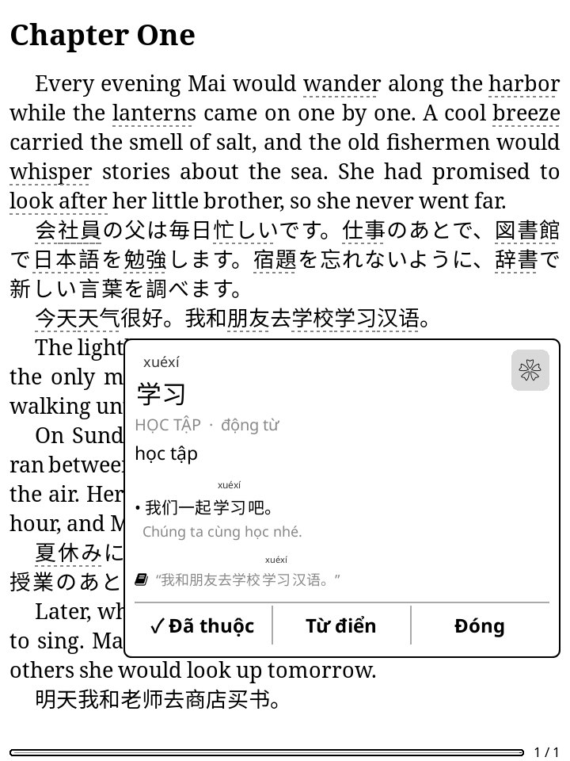
Tiếng Trung có pinyin · Tiếng Nhật có furigana
Trợ lý AI MỚI
Hỏi đáp, tạo bộ thẻ, điền thẻ, với AI bạn chọn.
Hỏi gì cũng có AI trả lời
AI biết bạn đang học ngôn ngữ nào, trình độ nào, và trả lời bằng ngôn ngữ giao diện của bạn.
- ✦4 nút AI ngay dưới thẻMẹo nhớ, Giải thích, Thêm ví dụ, Từ dễ lẫn.
- ?Câu hỏi gợi ý một chạmDạy 5 từ mới, kiểm tra từ đang học, luyện hội thoại, sửa câu, giải thích ngữ pháp, truyện ngắn bằng từ đang học…
- +Tạo bộ thẻ bằng AIChọn ngôn ngữ, trình độ A1–C2, chủ đề và số thẻ từ 20 đến 500.
- ⌕Tra cứu và từ điển AITìm một từ trong mọi bộ thẻ đã có, rồi nhờ AI giải thích sâu hơn.
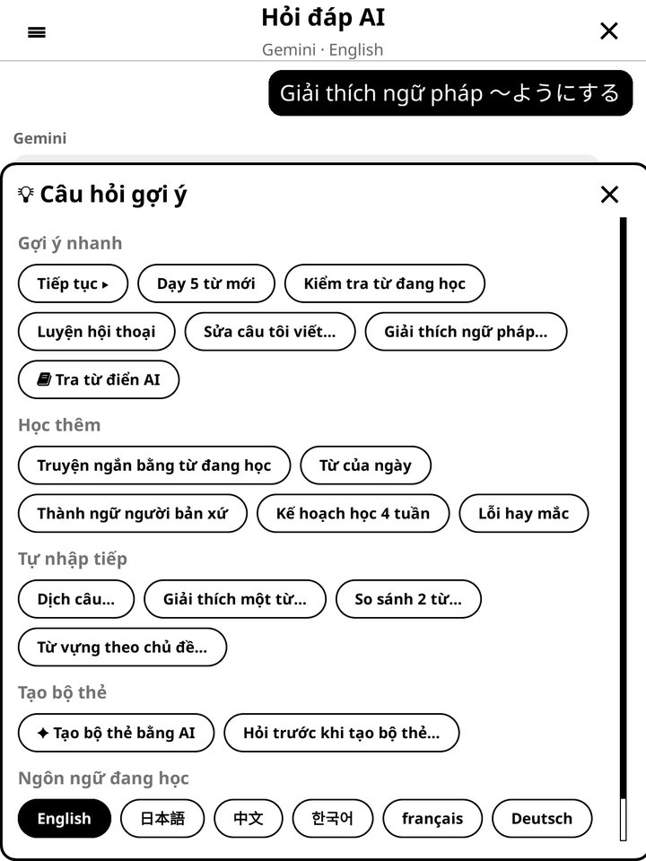
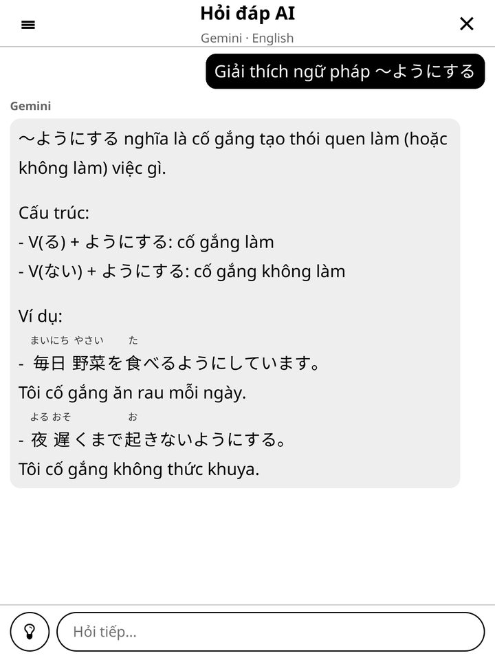
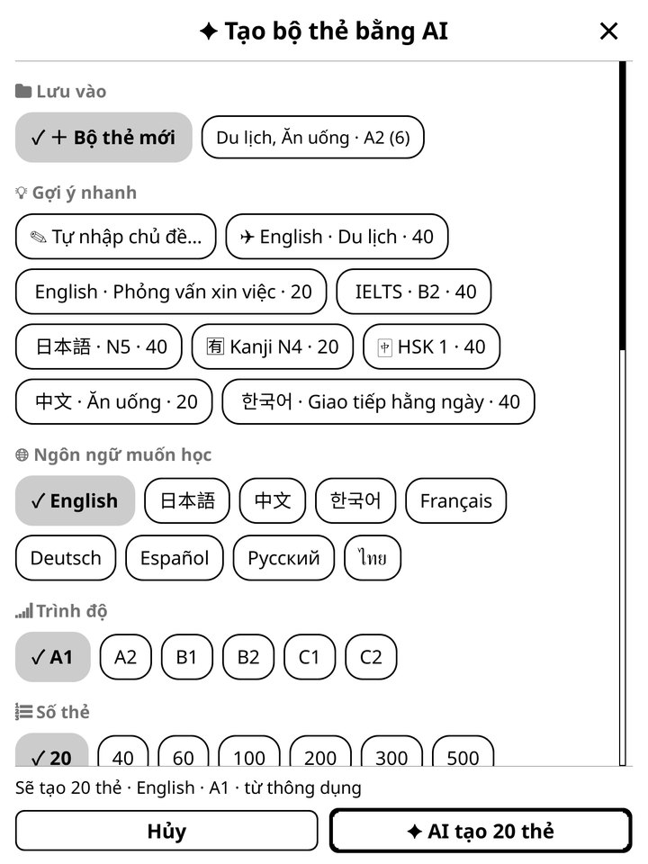
Câu hỏi gợi ý · Hỏi đáp AI · Tạo bộ thẻ bằng AI
Dùng AI bạn thích, kể cả AI chạy ở nhà
Mỗi AI có một thẻ riêng với hướng dẫn lấy key từng bước. Key lưu trên máy đọc và gửi thẳng tới nhà cung cấp, không qua máy chủ MemDeck.
- GGemini (mặc định)Có gói miễn phí, chỉ cần tài khoản Google.
- ✦ChatGPT, Claude, DeepSeek, GroqDùng key của tài khoản bạn đã có.
- ∞OpenRouterMột key cho hàng trăm model, có cả model miễn phí.
- ⌂Máy chủ riêngOllama, LM Studio hoặc máy chủ kiểu OpenAI trong nhà. Không cần Internet, không tốn phí.
- ⇄Gửi key từ điện thoạiQuét mã QR, dán key trên điện thoại là xong, khỏi gõ trên màn hình e-ink. Chọn chế độ Nhanh hoặc Thông minh và model tuỳ ý.
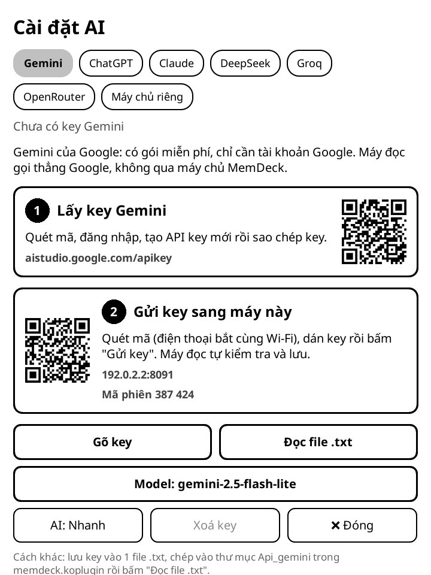
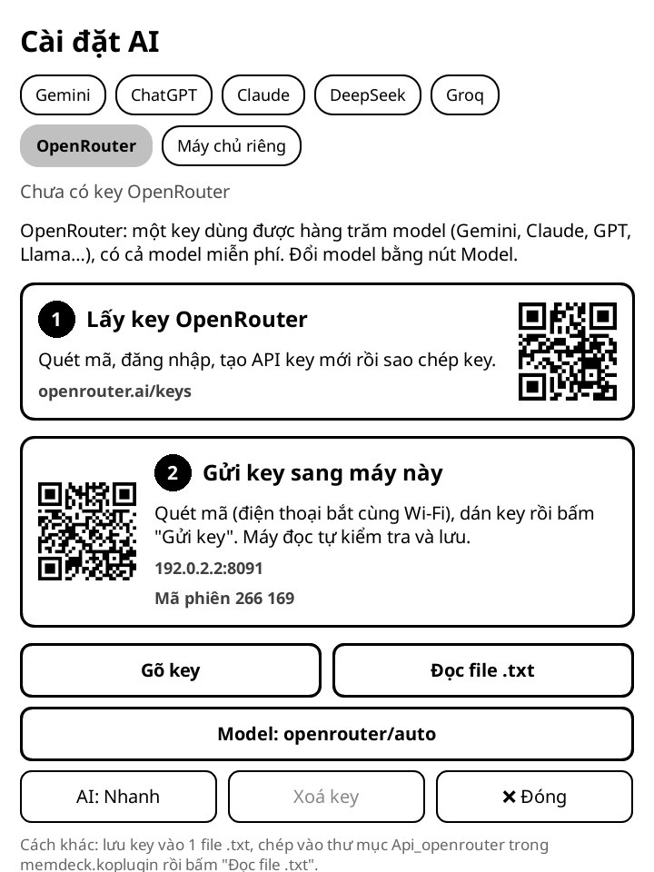
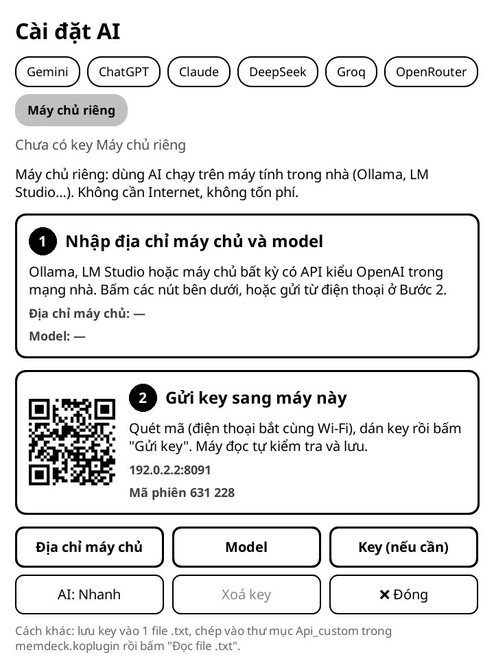
Gemini · OpenRouter · Máy chủ riêng
Bộ thẻ MỚI
Tải từ Store hoặc mang bộ thẻ của bạn vào.
Kho bộ thẻ đa ngôn ngữ
Bộ thẻ theo chủ đề cho từng trình độ, mỗi thẻ có cách đọc, nghĩa, 2 câu ví dụ có dịch và bài điền từ. Tải một lần, học không cần mạng.
- 9Chọn ngôn ngữ nghĩa khi tảiViệt, Anh, Hàn, Trung, Pháp, Đức, Tây Ban Nha, Nga, Thái (tuỳ bộ thẻ).
- ◉Xem trước khi tảiGiới thiệu, thẻ mẫu và danh sách chủ đề. Xem được cả trên web.
- ↻Cập nhật không mất tiến độBộ đã tải có dấu ✓, có bản mới thì MemDeck báo. Tải chạy nền, vẫn học được.
Đang có trên Store, và còn tiếp tục bổ sung:
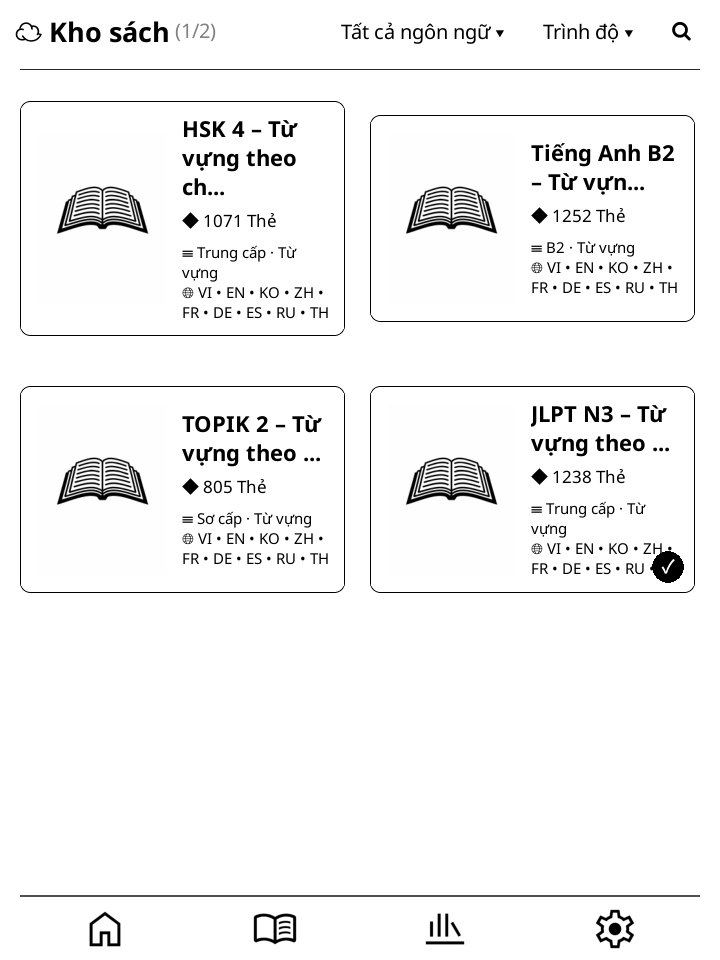
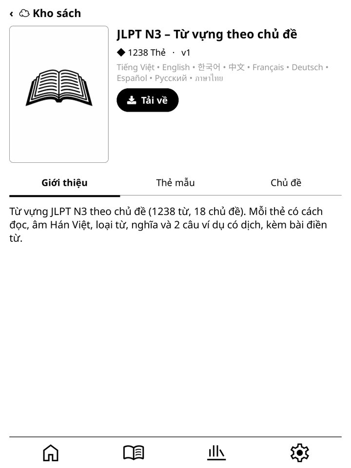
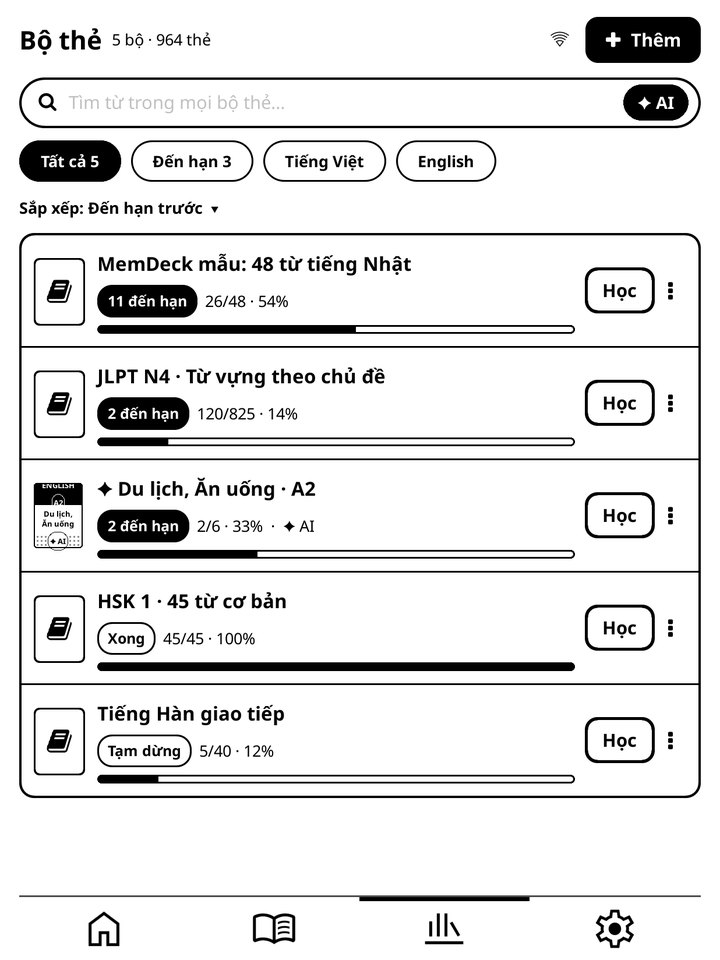
Kho bộ thẻ · Chi tiết bộ thẻ · Thư viện
Mang bộ thẻ Anki sang, AI làm nốt phần thiếu
Nhập bộ thẻ cũ hoặc tự làm từ file. Thẻ thiếu nghĩa, phiên âm hay câu ví dụ thì AI điền giúp, chạy ngầm trong khi bạn vẫn dùng máy.
- ANhập Anki (.apkg, .txt) MỚIXuất từ Anki bằng «Support older Anki versions» hoặc «Notes in Plain Text». MemDeck tự nhận ra trường từ, nghĩa, ví dụ.
- ✦AI điền ô còn trống MỚIĐiền nghĩa, phiên âm, câu ví dụ và bản dịch, từng đợt 20 thẻ. Tắt máy giữa chừng thì lần sau có mạng làm tiếp.
- ⟲Dịch lại toàn bộ MỚIĐổi toàn bộ nghĩa và câu dịch sang ngôn ngữ bạn chọn, ví dụ bộ Anki tiếng Anh sang nghĩa tiếng Việt.
- ⇄CSV qua Wi-Fi, xuất ngược ra AnkiQuét mã QR trên máy đọc, chọn file trên điện thoại hoặc máy tính là xong. Bộ thẻ tự làm xuất được ra Anki.
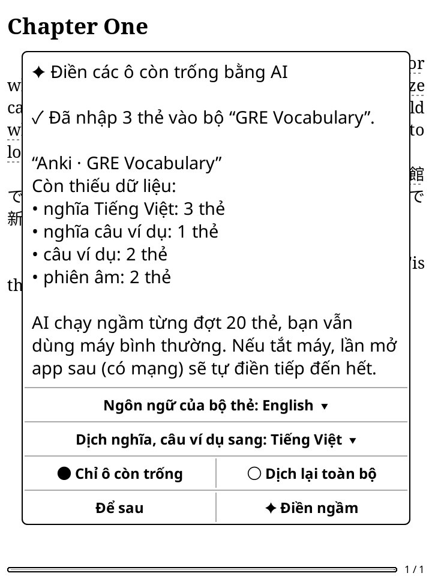
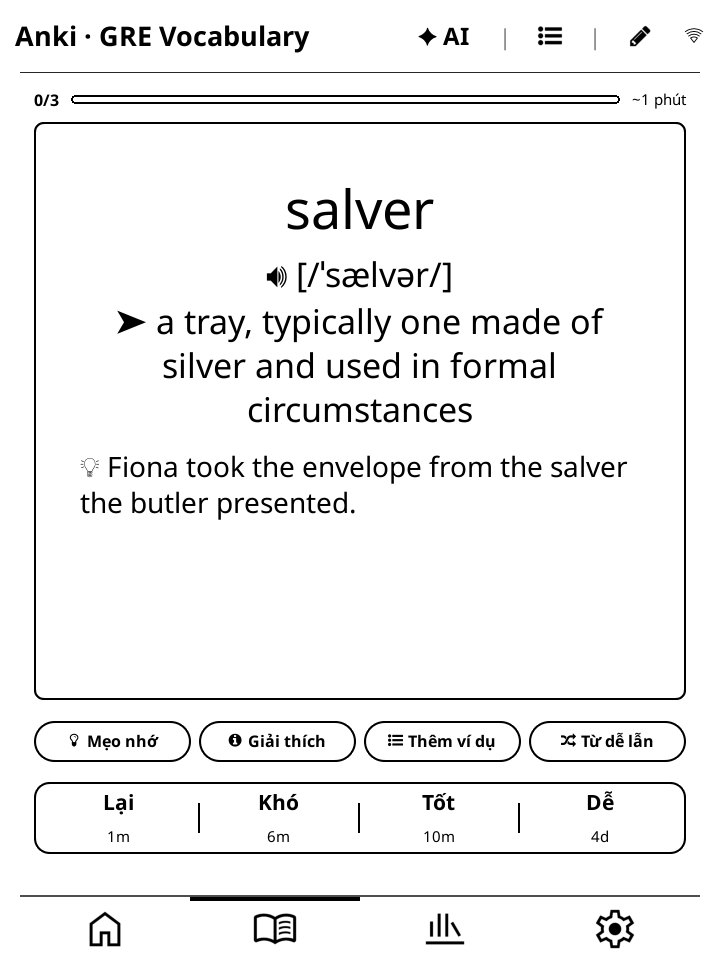
Sau khi nhập: chọn AI điền · Thẻ Anki học như thẻ thường
Tiến độ & cá nhân hoá
Thấy rõ mình đã học bao nhiêu, chỉnh theo ý bạn.
Thấy rõ tiến bộ mỗi ngày
Mọi con số bạn cần để giữ thói quen: hôm nay học được bao nhiêu, ngày mai cần ôn bao nhiêu, đã học đều chưa.
- ◎Mục tiêu ngày và chuỗi ngày họcCó cả ngày nghỉ được giữ chuỗi.
- ▮Thẻ đến hạn 7 ngày tớiBiết trước ngày nào sẽ nhiều thẻ.
- ▦Lịch học 12 tuầnMỗi ô là một ngày, càng đậm càng học nhiều.
- ⚙Cài đặt theo ý bạnMục tiêu ngày, giới hạn thẻ mới, thẻ ôn trên màn hình chờ, giao diện 10 ngôn ngữ. Tự sao lưu tiến độ mỗi 7 ngày.
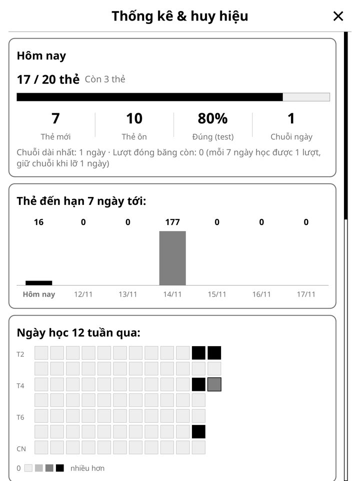
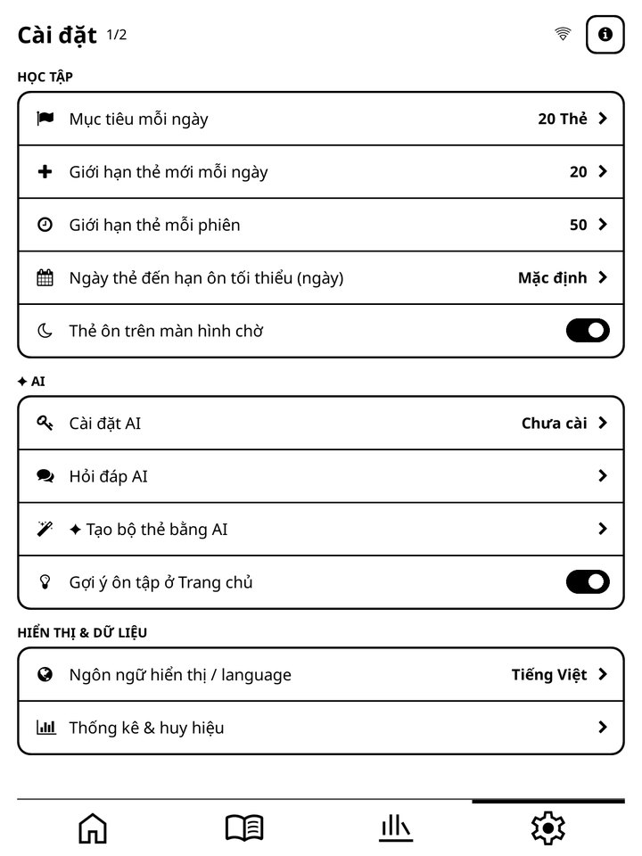
Thống kê · Cài đặt
Miễn phí, ủng hộ tuỳ tâm
Mọi tính năng đều miễn phí, không quảng cáo.
Miễn phí trọn vẹn
MemDeck không quảng cáo, không khoá tính năng nào. Nếu app giúp ích cho bạn, một khoản ủng hộ nhỏ giúp duy trì máy chủ, ra thêm bộ thẻ và thử app trên máy đọc thật.
- ₫VietQRQuét bằng app ngân hàng, số tiền tuỳ bạn.
- $PayPalThẻ quốc tế hoặc tài khoản PayPal, từ bất kỳ nước nào.
- ♥Mở ngay trong appNút ❀ Ủng hộ trong Cài đặt, hoặc trên trang Ủng hộ.
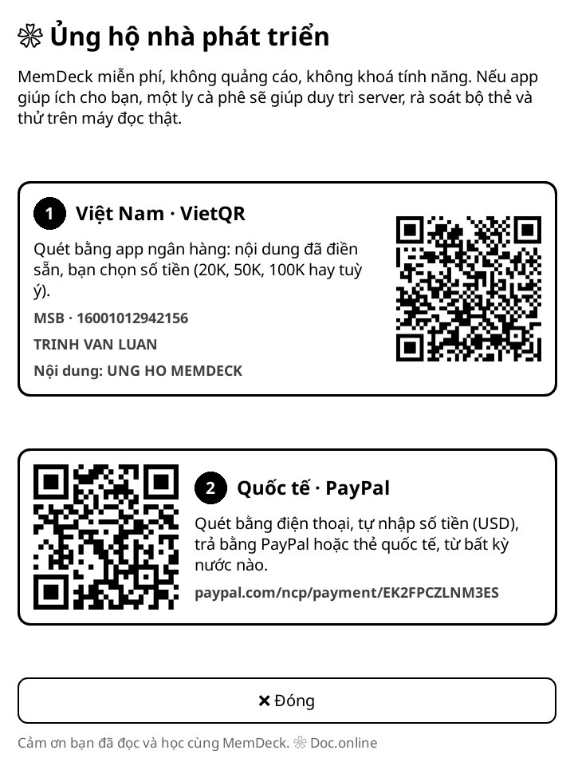
Màn hình Ủng hộ trong app
Sẵn sàng thử MemDeck?
Tải plugin, chép vào thư mục plugins của KOReader và bắt đầu học trong vài phút.